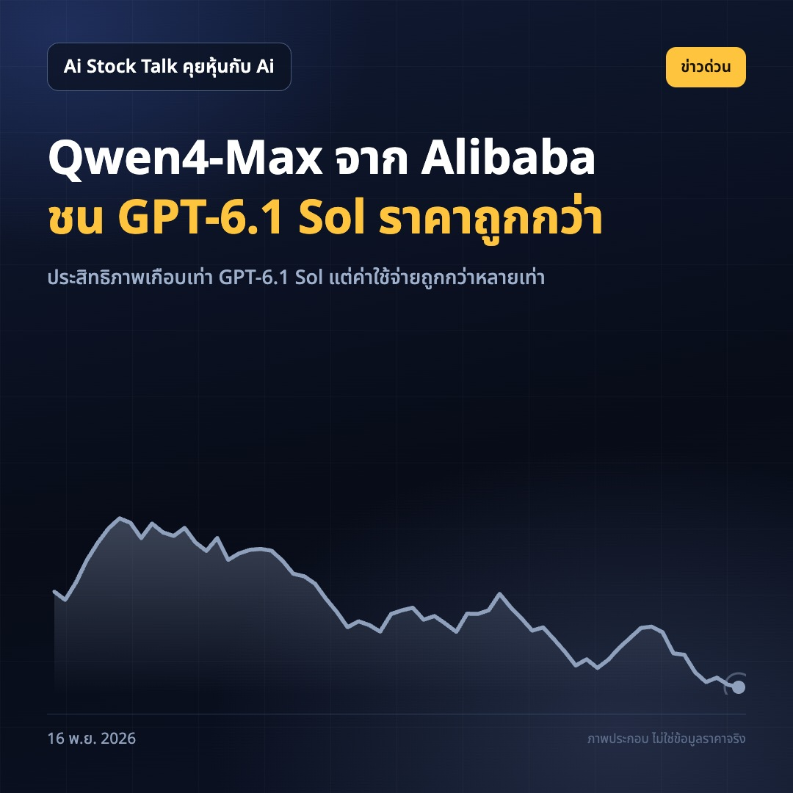

1. Jensen Huang ลาออกจาก CEO Nvidia แล้ว Colette Kress รับตำแหน่งทันที

Jensen Huang ลาออกจากตำแหน่ง CEO ของ Nvidia แล้ว หลังพาบริษัทครองตลาดชิป AI มายาวนาน Colette Kress รับตำแหน่ง interim CEO ทันที และต้องรายงานผลประกอบการในไม่ถึงสัปดาห์ หุ้น Nvidia ซึ่งขึ้นกับความต้องการชิป AI ทั้งหมดกำลังถูกจับตา ว่าทิศทางบริษัทจะเปลี่ยนไปแค่ไหน โดยเฉพาะเมื่อลูกค้ารายใหญ่อย่างบริษัทยักษ์ใหญ่เทคเริ่มพัฒนาชิปใช้เอง ทำไมต้องสน: Nvidia คือกระดูกสันหลังของ AI ทั้งอุตสาหกรรม การเปลี่ยนผู้นำตอนตลาดผันผวนส่งผลถึงหุ้นเทคโนโลยีทั่วโลก คิดยังไงกับการลาออกครั้งนี้ หุ้น AI ในพอร์ตยังถือต่อไหม ที่มา: https://www.cnbc.com/2026/11/16/nvidia-jensen-huang-return-tech.html, https://www.theverge.com/ai-artificial-intelligence/1031740/jensen-huang-nvidia-scandal-isnt-slowing-down
Nvidia #JensenHuang #AIStocks #หุ้นเทคโนโลยี
2. Alibaba ปล่อย Qwen4-Max ชน GPT-6.1 Sol ราคาถูกกว่าหลายเท่า

Alibaba เปิดตัว Qwen4-Max โมเดลภาษาขนาดใหญ่รุ่นใหม่ ตั้งค่าระดับการให้เหตุผลได้ 4 ระดับ คะแนนจาก Artificial Analysis ได้ 43 แต้ม ค่าใช้จ่ายเฉลี่ย $3.27 ต่อการเรียกใช้ ขณะที่ GPT-6.1 Sol (medium) ได้ 46 แต้ม แต่ค่าใช้จ่ายเฉลี่ยเพียง $0.36 ทำไมต้องสน: โมเดล open-weight จากจีนไล่จี้ OpenAI ติดๆ ผู้ใช้มีทางเลือกมากขึ้น ถูกกว่า เร็วกว่า หรือถูกกว่ามากแล้วแต่กรณี เลือกใช้อะไรระหว่าง Qwen4-Max กับ GPT-6.1 Sol ที่มา: https://qwen.ai/blog?id=qwen4-max
Qwen4Max #Alibaba #LLM #AI